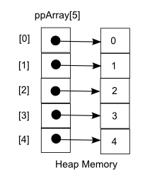
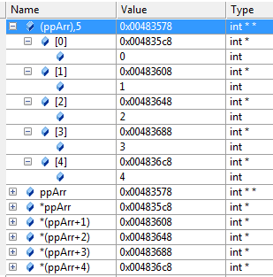
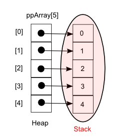
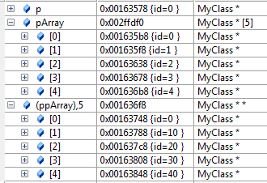
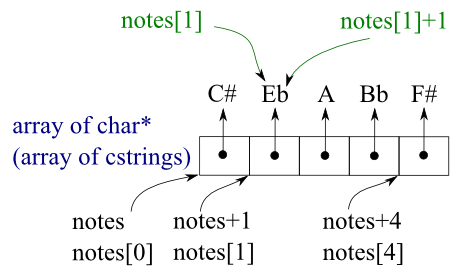
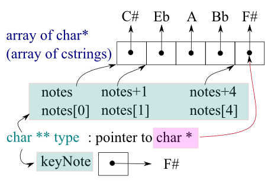

C++ Tutorial
- Pointers II - 2017
The void* doesn't mean it points to nothing. Actually, it is pointing something but we just don't know the exact type of object it is pointing to.
Let's take a look at the famous swap() function
#include <iostream>
using namespace std;
void swap(int *ap, int *bp)
{
int temp;
temp = *ap;
*ap = *bp;
*bp = temp;
}
int main()
{
int a = 7, b = 17;
cout << "a = " << a << " b = " << b << endl;
swap(&a;, &b;);
cout << "a = " << a << " b = " << b << endl;
return 0;
}
With an output:
a = 7 b = 17 a = 17 b = 7
The swap() function has been used to illustrate how the pointers are working. However, we want to discuss the type of variables we're swapping. Here, integers are being swapped. Can we tell where the type information is used in the code? Not clear? What the code is doing is exchanging bit patterns reside in the memory pointed by the pointers to integers. Algorithmically it's simply a bit pattern rotation. How the integer is used? When we copy the bit pattern, we do in 4-byte unit.
So, the basic function of the code is copying bit pattern and it does not care much about the type. It's not that tough for us to make the code type independent if we use void*.
The primary use for void* is for passing pointers to functions that are not allowed to make assumptions about the type of the object and for returning untyped objects from functions. To use such an object, we should use explicit type conversion.
A void* pointer is a pointer that point to a value that has no type. A void pointer seems to be of limited use. However, when combined with the ability to cast such a pointer to another type, they are quite useful.
Since it has an undetermined length and undetermined dereference properties, void pointer can point to any data type, from an integer value or a float to a string of characters. That's why it is sometimes referred to as a generic pointer.
However, on the other hand, void pointers have a great limitation such as the data pointed by them cannot be directly dereferenced since there is no type information to guide the compiler in interpreting the underlying bit pattern. So, we will always have to cast the address in the void pointer to some other pointer type that points to a concrete data type before dereferencing it.
A void pointer is declared like a normal pointer, using the void keyword as the pointer's type:
void *pVoid;
Here is a simple example using the void* pointer.
#include <iostream>
using namespace std;
enum Type {
INT,
FLOAT,
STRING,
};
void Display(void *pVoid, Type eType) {
switch (eType) {
case INT:
cout << *(int*)pVoid << endl;
break;
case FLOAT:
cout << *(float*)pVoid << endl;
break;
case STRING:
cout << (char*)pVoid << endl;
break;
}
}
int main()
{
int a = 10;
float b = 987.654;
char *c =
"Art is a lie that makes us realize the truth.";
Display(&a;, INT);
Display(&b;, FLOAT);
Display(c, STRING);
return 0;
}
Output is:
10 987.654 Art is a lie that makes us realize the truth.
In the code above, the function Display() is called with an argument of &a, &b, and c which are pointers. Then it gets them as void *pVoid which is a void* pointer type.
Inside the Display() function, it prints out after casting them to appropriate types and dereferencing them.
Here is an example that shows there is no automatic conversion of a void* pointer to a pointer to a particular type.
#include <iostream>
int main()
{
int i;
int *pi = 0;
char *pc = 0;
void *pVoid;
pVoid = pi;
pVoid = pc;
const int *pci = &i; // pointer to const int
pVoid = pci; // error
return 0;
}
If we compile it, we get an error:
cannot convert from 'const int *' to 'void *'
What we need to do is assign the const int * to const void * not to void * or we take the constantness from the pointer to const_cast<int *>(pci), as in the following code.
#include <iostream>
int main()
{
int i;
int *pi = 0;
char *pc = 0;
void *pVoid;
pVoid = pi;
pVoid = pc;
const int *pci = &i; // pointer to const int
//pVoid = pci; // error
const void *pcVoid = pci; // using const void*
pVoid = const_cast<int *>(pci); // cast away constantness
return 0;
}
Not satisfied with my description. Then, how about the following excerpts from a new book "Programming ...., 2008" by Bjarne Stroustrup.
The type void* means "pointer to some memory that the compiler doesn't know the type of."
We are using void* when we want to transmit an address between pieces of code that really don't know each other's type.
Normally we use it in the following cases:
- A type of pointer that points to memory without knowing what kinds of objects reside in that memory.
- An operation to tell the compiler what kind of type to assume for memory pointed to by one of those pointers.
There are no objects of type void, but we use void to mean no value returned:
void v; // error because there are no object of type void void v(); // v() return nothing - v() does not return an object of type void
A pointer to any object type can be assigned to a void*:
void* ptr1 = new int; //OK: int* converted to void* void* ptr2 = new double[100] //OK: double* converted to void*
Because the compiler doesn't know what a void* points to, we should let the compiler know:
void function(void *pvoid)
{
void* pvoid2 = pvoid; // copying is OK (copying is what void*s are for)
double* pd = pvoid; // error: cannot convert void* to double*
*pvoid = 7; // error: cannot dereference a void*
int* pi = static_cast<int*>(pvoid) // OK: explicit conversion
}
In this section, we will see another example of using void* related to generic programming. It's a kind of C-way of making a code generic which is equivalent of using templates in C++. Though there are lots of benefit of using templates, one of the downside of template is that the executable could become huge if we use the generic code for hundreds of different types such as int, float, student object, shape object etc. The C version of code we're going to make does not have that issue though it could become harder to code correctly.
Here is a simple swap program for integer. Later, we'll make it generic using void*.
#include <iostream>
using namespace std;
void swap(int *ap, int *bp) {
int temp = *ap;
*ap = *bp;
*bp = temp;
}
int main()
{
int a = 10, b = 20;
cout << a << " , " << b << endl;
swap(&a;, &b;);
cout << a << " , " << b << endl;
}
Output from the run:
10 , 20 20 , 10
Now, we want the swap() to work for any types, int, char, char *, float, double, etc. So, we decided to use our void *. Let's look at the code below and find out what's wrong in the code.
void swap(void *vp1, void *vp2) {
void temp = *vp1;
*vp1 = *vp2;
*vp2 = temp;
}
- We can't declare a variable as a void type:
void temp
- We're not allowed dereference void pointer:
void temp = *vp1;
Why not?
Because we don't know the type, we don't know how many bytes we should embrace from the memory. Should we get 1 byte, 2 bytes, or 4 bytes? We do not have the type information about the thing being addressed at all.
To address this problem for unknown type (or size), we need to get more information from the caller. In other words, the called should pass in the size info as an argument.
Here is the final code for generic swap().
#include <iostream>
using namespace std;
void swap (void *vp1, void *vp2, const int size) {
char *buffer = (char *)malloc(sizeof(char)*size);
memcpy(buffer, vp1, size);
memcpy(vp1, vp2, size);
memcpy(vp2, buffer, size);
free(buffer);
}
int main()
{
int a = 10, b = 20;
cout << a << " , " << b << endl;
swap(&a;, &b;, sizeof(int));
cout << a << " , " << b << endl;
cout << endl;
char *puppy = strdup("Wow");
char *kitty = strdup("Mew");
cout << puppy << " , " << kitty << endl;
swap(&puppy;, &kitty;, sizeof(char **));
cout << puppy << " , " << kitty << endl;
}
Output is:
10 , 20 20 , 10 Wow , Mew Mew , Wow
In char *buffer, actually we don't care whether it's character or not. All we want is to have enough bytes to store something with size-byte. In other words, we need storage.
The function memcpy() is similar to strcpy() which copies bytes from one location to another location kept on copying until it found '\0' and copy the '\0' as well. The memcpy() is not dedicated to characters and is more generic. It does not pay attention to the '\0'. We have to explicitly tell it how many bytes to copy to memory location.
We can find other usages of void * in memory functions:
- void * memcpy ( void * destination, const void * source, size_t sz)
- void *memmove(void *dest, const void *src, size_t sz)
- void * memset ( void * destination, int source, size_t sz )
- int memcmp (const void *s1, const void *s2, size_t sz )
"The use of pointer arithmetic is mainly a matter of personal taste; some programmers consider pointer-based algorithms to be more elegant than their array-based counterparts; others simply find them harder to read. Certainly the fact that arrays are passed as pointers makes it natural to write subroutines in the pointer style." - Programming Language Pragmatics, 3rd ed. 2009 (Michael L. Scott).
For multi-dimensional array, go to Multi-dimensional Arrays and Pointers.
Pointers have a close relationship with arrays. In fact, an array name is a constant pointer to the first element of the array. When a compiler sees int a[] as a parameter passed to a function, the compiler actually converts it to int * const a, which can be read as a is a constant pointer to an integer.
Since elements of an array are stored in a contiguous block of memory, we can use the array name as a pointer to access to the elements.
int myArray[5]; int *pi = myArray;
Since the array name itself is a pointer to the first element of an array, the last line is equivalent to assigning the address of the first element to the pointer:
int *pi = &myArray;[0];
In any case, we created the array on the stack as we can see from the picture below (left):

Note that the pointer pi is also a variable created on the stack. We can create the array on the heap while the pointer itself is still on the stack (picture in the right side):
int *pArray = new int[5]
We can assign an array name to a pointer.
pi = myArray;
Then, pi and myArray are equivalent. The only difference is that we could change the value of pointer pi by another one, whereas myArray will always point to the first of the 5 elements of type int with which it was defined since the array name myArray is a constant pointer to the first element of the array .
So, the following assignment is illegal.
myArray = pi;
Again, the reason is we cannot assign a value to a constant. Simple but easy to forget.
Here is an example showing the relationship between pointers and arrays.
#include <iostream>
using namespace std;
static const int SIZE = 3;
void doubleScores(int * const array) {
for (int i = 0; i < SIZE; i++)
array[i] *= 2;
}
void showScores(const int* const array) {
for (int i = 0; i < SIZE; i++)
cout << array [i] << endl;
}
int main()
{
int scores[] = {68,72,75};
cout << *scores << endl;
cout << *(scores+1) << endl;
cout << *(scores+2) << endl;
doubleScores(scores);
showScores(scores);
return 0;
}
The code creates an array of scores and then displays them using the array name as a constant pointer. Then, it passes the array name as a constant pointer to a function to double the scores. Next, the code passes the array name to a function as a constant pointer to a constant to show the scores doubled.
As mentioned before, because an array name is a constant pointer to the first element of the array, we can dereference the name to get the first element.
cout << *scores << endl;
We can randomly access array elements using an array name as a pointer through using pointer arithmetic. What we do is to add the position number of the element we want to access to the pointer before we dereference it.
cout << *(scores+1) << endl; cout << *(scores+2) << endl;
In general, following two lines are equivalent.
array[i] *(array + i)
Because an array name is a constant pointer, we can use it to pass an array to a function as shown below.
doubleScores(scores);
Our program passes to doubleScores() a constant pointer to the first element of the array. As we can see from the function header of doubleScores(), the array name is accepted as a constant pointer.
void doubleScores(int * const array) {
The function showScores also accepts scores as a pointer. However, as we can see from the function header, the function accepts it as a constant pointer to a constant.
void showScores(const int* const array) {
By passing the array in this way, we keep it safe from being modified inside the function. In fact, all we want to do here is just displaying the array elements.
An array is often passed to a function as a pointer to an element. Therefore, they lose their size, and the receiving function cannot directly tell how many elements are pointed to. This is the cause of many bugs, and the following won't work:
int getLength(int *myarray)
{
return (sizeof(myarray) / sizeof(myarray[0]));
}
We get 1 as a return value. Actually, the above line is the same as this:
return (sizeof(myarray) / sizeof(myarray));
Therefore, we need to pass the size as well when we pass an array.
Even if we include the size in the brackets,
int getLength(int myarray[10])
the compiler simply ignores it. As we learned, the base address of the caller's argument (the memory address of the first array element) is passed to the function. The function works for an argument of any size. Because the function cannot know the size of the caller's array, we either set the size as a constant, pass the size as an argument
An array can contain pointers.
char *suit[4] = {"Hearts", "Diamonds", "Clubs", Spades"};
The suit[4] indicates the array has 4 elements. char * means the each element of the suit array is a pointer to a character. The four elements in the array are "Hearts", "Diamonds", "Clubs", and Spades". Each of the element are stored as a character array with null at its end. Though it appears that the 4 character arrays are in the suit array, actually, the array has only the pointers. Each pointer points to the first character of each character array. Note that even though the suit array has fixed size of 4, it can have arbitrary size of character arrays.
The following code is an example of passing array of pointers to a function.
#include <iostream>
#include <cstdlib>
#include <ctime>
using namespace std;
struct Card
{
char *face;
char *suit;
};
void setDeck(Card *, char *[], char *[]);
void shuffle_and_deal(Card *);
int main()
{
Card deck[52];
char *face[] = {"Ace", "Deuce", "Three", "Four", "Five",
"Six", "Seven", "Eight", "Nine", "Ten",
"Jack", "Queen", "King"};
char *suit[] = {"Hearts", "Diamonds", "Clubs", "Spades"};
srand((unsigned)time(0));
setDeck(deck, face, suit);
shuffle_and_deal(deck);
return 0;
}
void setDeck(Card *aDeck, char *aFace[], char *aSuit[])
{
for(int i = 0; i < 52; i++) {
aDeck[i].face = aFace[i % 13];
aDeck[i].suit = aSuit[i % 4];
}
}
void shuffle_and_deal(Card *aDeck)
{
// shuffle
for(int i = 0; i < 52; i++) {
int ii = rand() % 52;
Card c = aDeck[i];
aDeck[i] = aDeck[ii];
aDeck[ii] = c;
}
// deal
for (int i = 0; i < 52; i++) {
cout << i << ": " << aDeck[i].face << " of " << aDeck[i].suit << endl;
}
}
The declaration of a pointer-to-pointer looks like
int **ppi;
where the two asterisks indicate that two levels of pointers are involved.

Double pointer (**) parameters are common in linked list or other pointer manipulating code. In this case, the value of interest is itself a pointer, such as a linked list head pointer.
Let's think about the ** in terms of passing parameter between caller and called.
Here the value of interest to be shared and changed between the caller and called is
already a pointer, such as an int*. The reference parameter is still a pointer to the value of
interest, even if the value of interest is itself a pointer. Suppose the value of interest is
int*. This means there is an int* value which the caller and called want to share and
change. Then the reference parameter should be an int**.
Let's look at the following simple example:
#include <iostream>
using namespace std;
int main()
{
int i = 10;
int *pi= &i;
int **ppi = π
cout << i << "," << pi << "," << ppi << endl;
cout << i << "," << *pi << "," << **ppi << endl;
return 0;
}
Output is:
10,0017FF28,0017FF1C 10,10,10

#include <iostream>
using namespace std;
int main()
{
int **ppArr = new int *[5];
for( int indx = 0; indx < 5; ++indx ) {
ppArr[indx] = new int(indx);
}
for( int indx = 0; indx < 5; ++indx ) {
delete ppArr[indx];
}
delete[] ppArr;
return 0;
}

First, we are creating space for our int in a dynamic array:
int **ppArr = new int *[5];
Then, we need to loop through and allocate an int for each spot in the array:
for( int indx = 0; indx < 5; ++indx ) {
ppArr[indx] = new int(indx);
}
Note the order that we deallocate the memory in the reverse order of allocation.
Let's look the the code below, which is different from the code above in terms of memory allocation. The array we created here is dynamically allocated but the pointers point to local instances of integers, and they are stored on the stack not in the heap. So, when we delete this we only need to delete the array:
delete[] ppArr;

#include <iostream>
using namespace std;
int main()
{
int **ppArr = new int *[5];
for( int indx = 0; indx < 5; ++indx ) {
ppArr[indx] = &indx;
}
/* Not needed
for( int indx = 0; indx < 5; ++indx ) {
delete ppArr[indx];
}
*/
delete[] ppArr;
return 0;
}
It applies not only to built-in types but also to user defined types (classes):
#include <iostream>
using namespace std;
class MyClass
{
public:
MyClass(int i = 0) : id(i) {}
~MyClass() {}
int getID() { return id; }
private:
int id;
};
const unsigned ARRAY_SIZE = 5;
int main()
{
// a pointer to MyClass
MyClass *p;
p = new MyClass(0);
// array of ARRAY_SIZE pointers to MyClass object
MyClass *pArray[ARRAY_SIZE];
for (int i = 0; i < ARRAY_SIZE; i++) {
pArray[i] = new MyClass(i);
}
// to allocate memory for an array of pointers dynamically (using the new operator)
MyClass **ppArray = new MyClass*[ARRAY_SIZE];
for (int i = 0; i < ARRAY_SIZE; i++) {
ppArray[i] = new MyClass(i*10);
}
delete p;
delete[] pArray;
for (int i = 0; i < ARRAY_SIZE; i++) {
delete ppArray[i];
}
delete [] ppArray;
return 0;
}

See how the delete/delete[] is used in hashing. (hash_table)
What are the usages of pointers to pointers?
Let's look at the following example.
#include <stdio.h>
#include <stdlib.h>
void f(char *c) {
c = (char *)malloc(3);
c[0] = 'p';
c[1] = 't';
c[2] = 0;
printf("function: %s\n",c);
}
int main()
{
char *str = 0;
f(str);
printf("main: %s",str);
free(str);
}
The intention is to set str as a pointer to a string "pt". But the output we get is:
function: pt main: (null)
What we want to do is to make the pointer str to point to a new memory allocated within the function. In other words, we want to change str which is char *. To change the value of char *, we need to pass a pointer to it.
Note that in C, everything is passed by value. A general rule is, we cannot change the value of a parameter passed to a function. If we want to pass something that needs to be changed, we need to pass a pointer to it.
So, in our case, we need to past a pointer to char *, i.e., char **.
This is a new code with the fix:
#include <stdio.h>
#include <stdlib.h>
void f(char **c) {
*c = (char *)malloc(3);
(*c)[0] = 'p';
(*c)[1] = 't';
(*c)[2] = 0;
printf("function: %s\n",*c);
}
int main()
{
char *str = 0;
f(&str;);
printf("main: %s",str);
free(str);
}
This time, we get:
function: pt main: pt
In summary, in our function, to change a char * value, we need pass a pointer to a char *.
If you do not want to change the pointer in the function, you can just pass the pointer with allocated memory.
#include <stdio.h>
#include <stdlib.h>
void f(char *c) {
c[0] = 'p';
c[1] = 't';
c[2] = 0;
printf("function: %s\n",c);
}
int main()
{
char *str = (char *)malloc(3);
f(str);
printf("main: %s",str);
free(str);
}
#include <iostream>
using namespace std;
int allocString(int len, char **ppChar) {
char *p = new char[len + 1];
if(p == NULL)
return 0;
*ppChar = p;
return 1;
}
int main()
{
char *string = "Pablo Picasso!";
char *copyString;
if(allocString(strlen(string), ©String))
strcpy(copyString, string);
else
fprintf(stderr, "out of memory\n");
cout << "string = " << string << endl;
cout << "copyString = " << copyString << endl;
return 0;
}
Output is:
string = Pablo Picasso! copyString = Pablo Picasso!
Now, the function allocString() wants to return a pointer via its argument. The corresponding parameter will then have to be a pointer to a pointer, char **ppChar. The function which tries to allocate memory for a string of length n, and which returns zero (``false'') if it fails and 1 (nonzero, or ``true'') if it succeeds, returning the actual pointer to the allocated memory via a pointer:
The example above is not a good way of memory allocation at all. But it shows how the pointer to a pointer is being used. Another better and more practical example that uses pointer to a pointer is deleting a node from the linked list which we'll discuss in later chapter of this tutorial such as linked list.
Let's look at another example. We declare an array of cstrings:

#include <iostream>
using namespace std;
void arrayTest(char **p) {
cout << " *p = " << *p << endl;
cout << " *(p+1) = " << *(p+1) << endl;
}
int main()
{
char *notes[] = {"C#", "Eb", "A", "Bb", "F#"};
char **pNotes[5];
for (int i = 0; i < 5; i++) {
pNotes[i] = ¬es[i];
cout << "pNotes[" << i << "] = " << pNotes[i] << endl;
cout << "*pNotes[" << i << "] = " << *pNotes[i] << endl;
}
cout << endl;
cout << "notes[1] =" << notes[1] << endl;
cout << "notes[1] + 1 =" << notes[1] + 1 << endl;
cout << "*(notes + 1) = " << *(notes + 1)<< endl;
cout << "*(notes + 2) = " << *(notes + 2)<< endl;
arrayTest(notes);
return 0;
}
Output is:
pNotes[0] = 0017FF18 *pNotes[0] = C# pNotes[1] = 0017FF1C *pNotes[1] = Eb pNotes[2] = 0017FF20 *pNotes[2] = A pNotes[3] = 0017FF24 *pNotes[3] = Bb pNotes[4] = 0017FF28 *pNotes[4] = F# notes[1] =Eb notes[1] + 1 =b *(notes + 1) = Eb *(notes + 2) = A *p = C# *(p+1) = Eb
Note that notes represent the same address as notes[0]. However, when we add 1, compiler does point arithmetic differently. In other words, the 1 in notes+1 hops to another cstring while the 1 in notes[]+1 hops to another character.
So, in cases when we want to pass an array of character strings (char **notes) for string comparison with the key string, what we need is hopping array by array as we're doing in arrayTest() by passing an array of pointers to the cstring. In other words, we need just one hop (one string at a time) not two hops(one character at a time).

In this section, we're going to do linear search to find a matching cstrings for a key. The search routine is made generic using void *:
#include <iostream>
using namespace std;
int StrCmp(void *vp1, void *vp2)
{
char *s1 = *(char **)vp1;
char *s2 = *(char **)vp2;
return strcmp(s1,s2);
}
void* lsearch(void *key, void *base, int n, int elemSize,
int (*cmpfn)(void *, void *))
{
for(int i = 0; i < n; i++) {
void *elemAddr = (char *)base + i * elemSize;
if(cmpfn(key, elemAddr) == 0) return elemAddr;
}
return NULL;
}
int main()
{
char *notes[] = {"C#", "Eb", "A", "Bb", "F#"};
char *keyNote = "F#";
char **found =
(char **)lsearch(&keyNote;, notes, 5, sizeof(char *), StrCmp);
cout << "*found = " << *found;
return 0;
}
Output is:
*found = F#
In the above code, let's look at the arguments of the lsearch() function:
char **found = (char **)lsearch(&keyNote;, notes, 5, sizeof(char *), StrCmp);
We're passing in notes which is equivalent of ¬es[0] and we know it's really a char **.
In the 4th argument, we're passing in sizeof(char *) rather than sizeof(char **), because we're interested in the byte width of each cstring element in the array. Though the size of char ** is the same as char *, we want it to be char * for readability purpose by showing the real data type resides in the array.
The last argument, StrCmp() is the comparison function for string and it's different from strCmp() of C-library.
For the first argument &keyNote;, we could just pass in keyNote without &. But it's more consistent if we match the type of the notes which is char **. So, we're passing in &keyNote;.
Let's look at the function StrCmp().
int StrCmp(void *vp1, void *vp2)
{
char *s1 = *(char **)vp1;
char *s2 = *(char **)vp2;
return strcpm(s1,s2);
}
In StrCmp(), when we're doing *(char **)vp1;, the (char **) means vp1 is two hops away from the character string and really it is.
Ph.D. / Golden Gate Ave, San Francisco / Seoul National Univ / Carnegie Mellon / UC Berkeley / DevOps / Deep Learning / Visualization